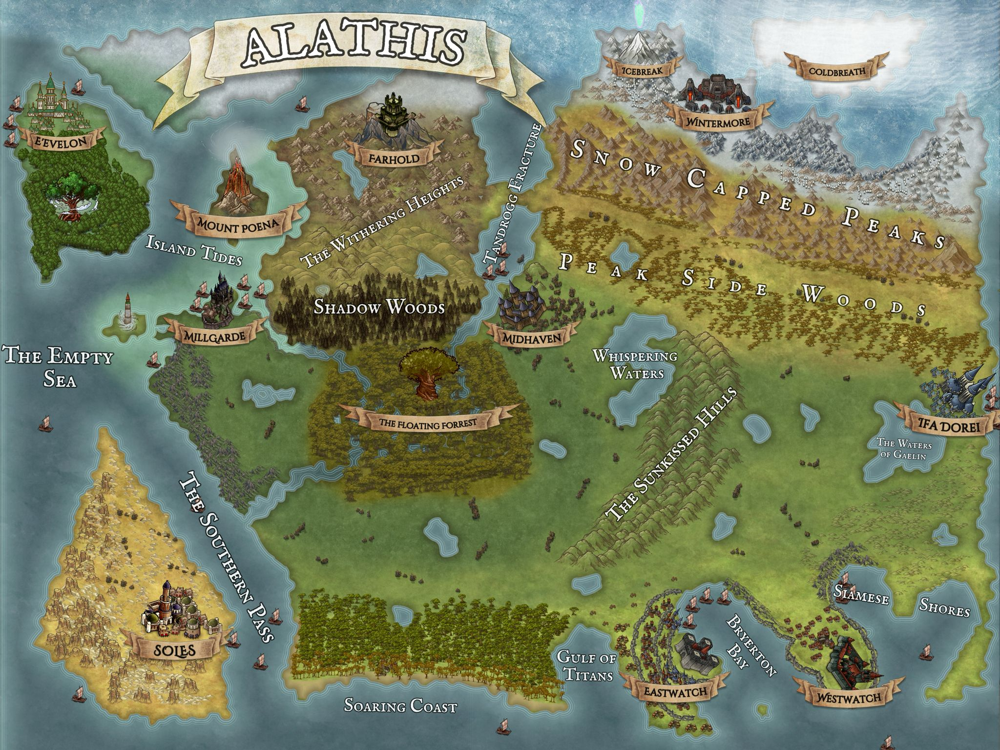

Welcome to Alathis

Alathis is a world of wonder, magic, rain, shine, swamp, mountain, cliffs, and desert.
Long ago the land fought through terrible War as demon and angel clashed on its surface. The planes feuded as fey, and shadow pitted the good and the evil against one another. As war raged, rifts cracked, and portals opened, and the material plane flooded with creatures and beasts of all kinds. Until a group of heroes took matters into their own hands.
Lyari Gaelin, Deraes Epialam, and Geskrax Tandrogg came along and fought through foe and horde to eradicate the material plane and banish those unwelcomed back to where they came. The heroes or known adventuring party traveled through the planes to restore peace in each realm. The last place anyone saw these heroes was the 9 hells as they sought to destroy the demonic threat once and for all. And as it is told, each of the heroes came to eventually perish somewhere along their journey through the hells for none of them were ever seen again and the demon siege seemed to halt.
These troubling times lay 300 winters in the past and the world of Alathis is living its first breath of peace in years. Now travelers wander the lands far and wide on adventures of their own, hunting beasts of the pasts who still wander the material plane, daring to go to places told to be cursed, looking for the lost treasure of fallen angel and demon. The rifts have since been sealed, and the world is quiet with power held in the hands of kings, queens, lords, and ladies of all races across the land.
All is still and quiet, that was until the night of the thunderous crack and bolt of golden light shaking the earth below sending a shockwave near and far. But that is not where our story begins. Our story begins in a busy tavern, in a small town, near the beach of The Soaring Coast amongst the trees.
E'evelon
The kingdom of the high elves. King Syphrus Highlan sees over the land. This place of elegance and manner is home to the most noble of elves living life as proper scholars of all this befitting an immortal scholar. A magical location of upper class and only the more professional of beings. All that said, these are some of the finest smiths in the world with minerals unique to their island, the weapons made here are their specialty despite their love of peace and prayer. All hope, love, and life surrounds the mother tree at the southern end of the Island.
Mount Poena
A large volcanic mountain standing alone on a baron island. This pillar of destruction has yet to erupt for 300 years though in the past 5 years the peak has begun to release a continuous steam which sinks to surround the island.
Farhold
The mountain kingdom of Dwarves but all are welcomed here to visit or stay. Ruled by King Brickston Stonethrow. A kingdom of complex elevation as the city extends up the side of the largest mountain in Withering Heights. The people here favor minerals, tinkering, and Jeweler as their trades of expertise. But something is wrong in this city as panic spreads through the streets. And word that something may be amiss is traveling slowly.
The dwarves of ice and mountain have never been the friendliest of beings, but tensions are stable for now.
Wintermore
Home to the Ice Dwarves. These Dwarves are home to dwarven kind alone, but welcome visitors yet reject their forever presence. Led by King Tori Hother. These dwarves live to protect the rift at the top of the mountain. While the strength of the warrior within these dwarves is mighty, they are most well known for their treasure hunter physique as they develop small skillful venture into the unforgiving tundra in search of rumored relics in the dead forgotten land of cold breath. Something happens in the tundra that few are believed to tell the true story.
Icebreak
The largest mountain in Alathis, home to a giant blue/green ripple in the sky that can be seen from Midhaven. No one is permitted to go near the mountain as Wintermore protects it with their lives.
MillGarde
Guardians of the sea these lands are ruled by Lady Idah Reef of the Water Genasi Tribe. The lands in this area are a safe haven to those remaining from the war that came through the portals who are not native to the Material Plane but sought peace and found haven here. Everyone here contributes to the success of their nation, and everyone is prepared to defend their right to be here. They are experts in negotiation and will aid all those who ask. Told to be the most peaceful of the nations, yet the most lethal by sea and to some the all-around most lethal as they are ready to die for the life of their each other.
Soles
The Desert lands of the Half Elves. The most reserved and cautious of the nations. Ruled by Prince Adarian Salus. After a hundred-year war amongst the elves, the half elves have conquered and protected the sandy desert from the greedy hands of high elves and Ifa Dorei alike as both sought to lay claim over the half elf kingdom after it was abandoned by those who fought for the light in the war of old. Restricted to outsiders until they prove themselves through a series of tests, including the conquering of the sand beasts.
The Floating Forest
Home to nature-based creatures of all kinds. These marshlands are ruled by the mother tree centered in the forest. Beings of all kinds visit the mother tree to seek guidance and wisdom, as the oldest treant of the forest, her wisdom is unparalleled. Small enclaves of different races live amongst the trees and work in unity to live off the land and be free. A series of bridges connect the different groups as residing on the ground is far too dangerous at night while the beasts of the marsh roam free. Something is poisoning the forest to the north, and its spreading. The beasts of this land can be quite the challenging foe as well.
Midhaven
While many halflings live reserved, quiet, and are afraid of those larger than them. These small warriors are led by the sharp spear of Halfling Lord Ferrost Smoketail the fearless. They are accepting of all small races, but the larger humanoids are visitors only. Here they breed warriors to hunt and gather as the creatures of the past fall on their doorstep, hungry to feed on them. Most welcoming to those who prove themselves in battle. Undeniably the most lethal Kingdom due to their constant preparation and daily battle exercises. They protect the lands from beasts of the peak side woods and those that would crawl out of the depths of the Tandrogg Fracture.
The Peak Side Woods
A large forest stretching across the land before the mountainous peaks to the north. These woods lay mostly uninhabited other than a few homesteads spread across the large area. Those willing to live in the woods better be willing to fight often as the beasts in this area are not easily won over. Though these lands often make for exciting tales to the more experienced adventurers looking for the beasts remaining from the old war.
Ifa Dorei
Home of the lower elves, mostly Drow, Woodland, and Eladrin in nature, These talented lovers of life and warriors live life in true Finess. Led by the beautiful yet stern Shadow Elf, Queen Erinyel Syva. Whilst significantly less harsh or rude to other races, these immortals still believe themselves to be of higher prowess. They seek to prove themselves as better than the high elves. Through breeding adventurers and preparing new means of improving their fight/search capabilities. While unquestionably efficient in small team combat, these warriors, or seekers if you will, train to seek and run. Large scale combat has not been a goal of the Ifa Dorei for some time now.
Westwatch
Home of natural born material planes-men. Sought over by Human Lord Ezekial Bryerton. They believe themselves to fight for the light. Believe in returning the Material Plane to its true former glory and ridding it of the unnatural born beings from the war. Though they party too hard and play too much to ever actually do something about anyone being here. The Kingdom of Westwatch is home to historians, artificers, and powerful magical beings. Though rebellion has taken to the street in disagreement with their old ways.
Eastwatch
Home to Classes and races of all kinds. While the levels of the kingdom divide the rich from the poor, all are welcome to make their own way here. Lead by the cursed Lady Galina Bryerton. Lady Bryertons bloodline was cursed long ago by the frustrated wife of a prior king of eastwatch. She learned the ways of wicked and cursed him and his blood to forever be more bestial like the beings he supported. The Bryertons of the same bloodline with differing opinion, split to form the two kingdoms, and feud in the way of yearly war games.
Soaring Coast
A beautiful beach for the best vacations. Humanoids from all across Alathis come to visit the Soaring Coast and take a break from their busy lives back home. With many towns to visit along the coast there are plenty of great choices for your break from adventure. Though always be vigilant, sometimes, things aren’t as they seem.
The Sunkissed Hills
Few if any reside in the hills running though the center of Alathis. Venturing through the hills may save you time, but it just might cost your life for there are many eyes that live in these hills.
Shadow Woods
For as long as most can remember, these woods have been shrouded in darkness. The chittering, howls, and even screams of the unknown can be heard from the edge of the woods. And sometimes, it really feels like the darkness is spreading…
The Withering Heights and Snow-Capped Peaks
The two mountain ranges of Alathis. Home to those who prefer to live life a bit more secluded from the rest of the world. Largely unexplored but known for the exciting adventures of hunting both beast and treasure. Sure to bring anyone an adrenaline rush if they look hard enough.